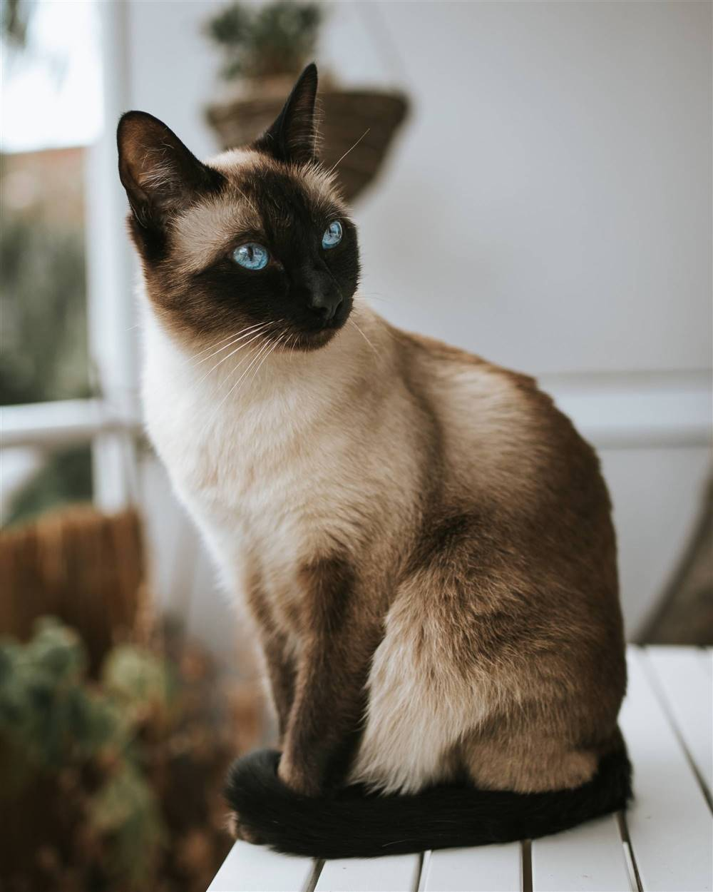
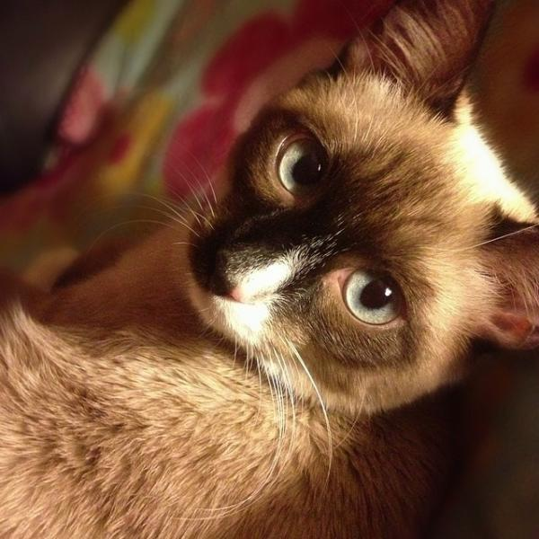
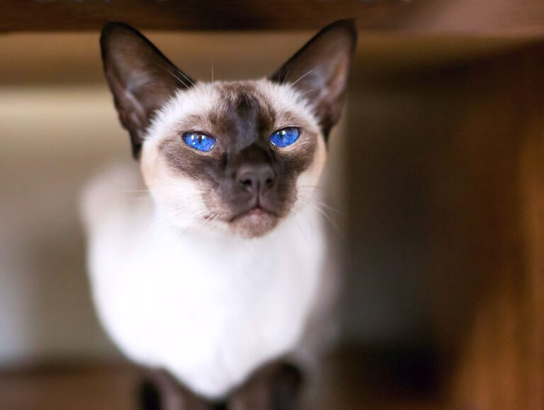
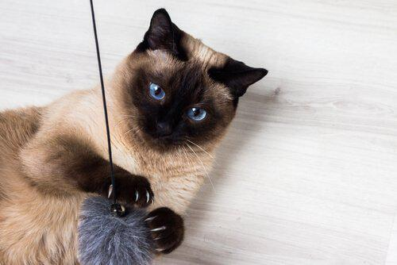
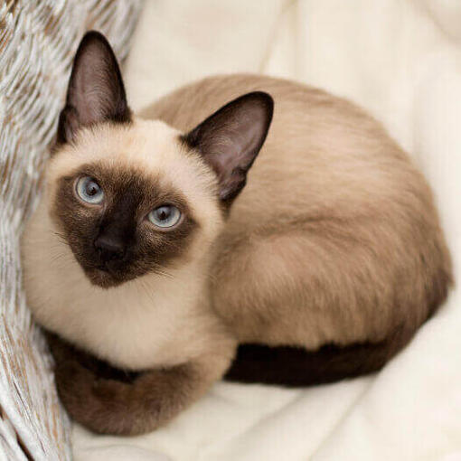

|
SIAMÉS
|
||
Aspecto del gato siamés |
Personalidad del gato siamés |
¿Gato de exterior o gato de interior? |
|
El siamés tiene una complexión alargada y atlética, que
sustentan unas patas esbeltas con pies pulcros y ovalados. Sus orejas son grandes
y puntiagudas, lo que le confiere una expresión inteligente, que sigue las líneas
de su cabeza triangular. Los ojos tienen forma almendrada y se inclinan hacia
la nariz, y su cola es larga, estrecha y recta. El manto del siamés es corto y
fino, ceñido al cuerpo, y se presenta en colores pálidos, con sombras más oscuras
en las partes distales, es decir, la cara, las orejas, las patas y la cola.
|
Este gato es increíblemente inteligente, afectuoso y obstinado, y se le
considera el extrovertido del mundo felino. Tiende a establecer vínculos
estrechos con una persona, y suele ser muy locuaz, con una voz grave y contundente.
No es un gato que le guste a todo el mundo, sino que es atractivo para
un tipo de persona muy concreto.
|
Si bien es un gato en forma y atlético, la naturaleza entrometida del
siamés, su fuerte maullido y su llamativo aspecto lo convierten en
posible objetivo de los ladrones y también hacen que pueda ser molesto
para los vecinos, por lo que es fundamental disponer de un jardín o un recinto
para gatos protegido donde pueda salir. Si ha de estar en interiores,
proporciónale a tu siamés una buena cantidad de juguetes y árboles para
gatos, de manera que esté entretenido.
|
 |
|
 |
 |
 |
 |
Nutrición y alimentación |
Higiene del gato siamés |
Estimulación y necesidades específicas |
|
Cada gato es único y tiene sus propias filias, fobias y necesidades particulares
en lo que respecta a la comida. Sin embargo, los gatos son carnívoros
y deben obtener 41 nutrientes diferentes y específicos de los alimentos que ingieren.
La proporción de estos nutrientes variará según la edad, el estilo de vida y la
salud en general, por lo que no sorprende que un gatito enérgico y en crecimiento
necesite un equilibrio de nutrientes diferente en su dieta que un gato sénior menos activo.
Otros aspectos que deben tenerse en cuenta son darle la cantidad adecuada de comida
para mantener el <estado físico ideal> según las pautas de alimentación y atender
las preferencias individuales por lo que respecta a las recetas de comida seca o húmeda.
|
Acicalar a un siamés es fácil; es un gato limpio y aseado. Bastará con un simple cepillado
con un cepillo de cerdas y una pasada con un trapo húmedo de vez en cuando para mantenerlo
en óptimas condiciones y que puedas comprobar si tiene algún parásito o pequeña herida.
|
El siamés es un gato inteligente y extremadamente resolutivo, que genera un vínculo estrecho con una sola
persona y el deseo de estar con ella, por lo que no siempre es un gato de convivencia fácil a
menos que estés dispuesto a prestarle mucha «gatención». Necesitarás muchos árboles para gatos,
darle la oportunidad de escalar y ofrecerle puzles dispensadores de comida y juegos
interactivos con su dueño para que tu siamés esté satisfecho y contento. No es una raza adecuada para
propietarios ocupados o que pasen mucho tiempo fuera. Tal vez sea mejor tener dos para que se hagan mutua
compañía, sin olvidar que, aun así, ambos necesitarán estar entretenidos a diario.
|